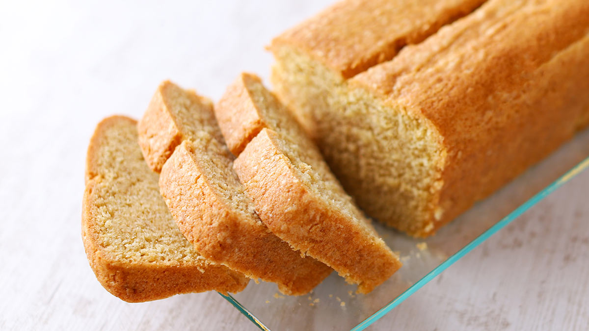

Rührkuchen

Zutaten:
Teig für den Kastenkuchen
- 300 g Weizenmehl
- 250 g Margarine
- 150 g Zucker
- 4 Eier
- 1 Pk Backpulver
- 1 Pk Vanillezucker
- 1 Priese Salz
- ggf. 2 EL Milch
Anleitung:
- Backofen auf 180 °C (Ober- und Unterhitze) vorheizen.
- Alle Zutaten auf einmal verrühren und und eine eingefettete Kastenform geben.
- 60 min backen.